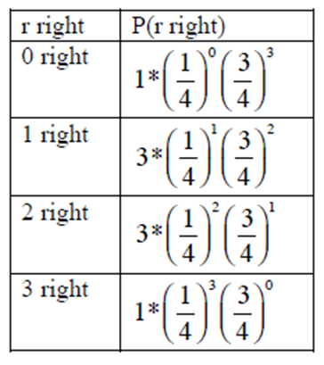
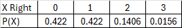

Calculate the mean and standard deviaton for binomial events
Subsection4.5.1Understanding the Basics
Another type of probability distribution that is created when there are just two events is the binomial probability distribution.
A binomial event contains two outcomes: such as male or female, you either win or lose a game, a test question is either true or false.
A binomial experiment is a probability experiment that satisfies the following four requirements:
There must be a fixed number of trials. This means that the experiment is repeated a specific number of times.
Each trial has only two outcomes (or can be reduced to the two outcomes of success and failure).
The outcomes of each trial must be independent of each other. what happens on one trial does not influence the outcomes of other trials.
The probability of success must remain the same for each trial.
Some notations we will be using for the binomial experiments:
\(P(S) \) is probability for success
\(P(F) \) is probability of failure
The numerical probability of success is \(p\)
The numerical probability of failure is \(q = 1 -p \)
\(n \) is the number of trials in the experiment
\(X\) is the number of successes in \(n\) trials
Deriving the Binomial Probability Formula
Suppose you are given a 3-question multiple-choice test. Each question has 4 responses and only one is correct. Suppose you want to find the probability that you can just guess at the answers and get 2 questions right. To help with the idea that you are going to guess, suppose the test is in Martian writing.
Let \(x\) = number of correct answers
Example4.5.1.Check binomial experiment.
There must be a fixed number of trials.
Each trial has only two outcomes.
The outcomes independent of each other.
The probability of success must remain the same for each trial.
Solution1.
There are 3 questions, and each question is a trial, so there are a fixed number of trials. In this case, n = 3.
Solution2.
Getting the first question right has no affect on getting the second or third question right, thus the trials are independent.
Solution3.
Either you get the question right or you get it wrong, so there are only two outcomes. In this case, the success is getting the question right.
Solution4.
The probability of getting a question right is one out of four. This is the same for every trial since each question has 4 responses. In this case, \(p = ¼ \) and \(q = 1− ¼ = ¾ . \)
This is a binomial experiment, since all of the properties are met.
Example4.5.2.Getting exactly two correct.
First we need to find the sample space to determine how many ways to get exactly two correct answers out of three choices. Then we can find the probability of getting 2 correct answers.
Solution.
Let’s start with finding the sample space. We are going to let R represent the right answer was chosen and W represents the wrong answer was chosen. Using a tree diagram we can find the sample space
Sample space = {RRR, RRW, RWR, WRR, WWR, WRW, RWW, WWW}, where RRW means you get the first question right, the second question right, and the third question wrong. The same is similar for the other outcomes.
There are three ways to get 2 right answers which are {RRW, RWR, WRR}.
Example4.5.3.Probability exactly two correct.
Find the probability of getting 2 correct answers in three questions.
Solution.
Next, we need to determine the probability of getting exactly two right.
Look at just P(RRW) for the moment. Again, that means P(RRW) = P(R on 1st, R on 2nd, and W on 3rd). Since the trials are independent, P(RRW)= P(R on 1st) * P(R on 2nd) * P(W on 3rd) thus we just multiply p * p * q
P(RRW) = (1/4)(1/4)(3/4) which is the same as \((1/4)^2 (3/4)^1 \)
The same is true for P(RWR) and P(WRR).
To find the probability of the 3 ways to get 2 correct answers, just add these three probabilities together. You get \(3(1/4)^2 (3/4)^1 =.140625\)
Example4.5.4.Generalize.
Generalizing the pattern we can determine the probability of each event and the number of ways to get exactly X correct
Solution.
Generalizing the pattern, we can determine the probability of each event with the number of ways to get exactly X correct answers from the sample space. There is 1 way to get 0 right, 3 ways with 1 right, 3 ways with 2 right, and 1 way with 3 right answers. Since the probability of the right answer is ¼ that is raised to the number of correct answers in the three questions and the ¾ is raised to the number of wrong answers.

Figure4.5.5.
Example4.5.6.Distribution.
Calculate the probabilities to create the distribution table.
Solution.
Probability distribution of the number of correct responses in three test questions creates a binomial distribution as shown in the table.

Figure4.5.7.Distribution of correct answers
The outcomes of a binomial experiment and the corresponding probabilities of these outcomes is called a binomial distribution.
Definition4.5.8.
The Binomial Probability Formula for exactly X successes in n trials is
See how the first part of the binomial formula for the number of ways the event occurs is the same as the combination formula for nCr . Also note that the sum of the exponents equals \(n\) for the total number of trials.
Application
During the first week of class, we investigated the eye colors of students. About 2% of the world population has green eyes and about 9% of the US population has green eyes. Consider a group of 20 people who were randomly selected from the US.
Let x = number of people with green eyes
Example4.5.10.Binomial experiment.
Check if this is a binomial experiment.
Solution.
1. There are 20 people, and each person is a trial, so there are a fixed number of trials. In this case, n = 20.
2. If you assume that each person in the group is chosen at random the eye color of one person doesn’t affect the eye color of the next person, thus the trials are independent.
3. Either a person has green eyes or they do not have green eyes, so there are only two outcomes. In this case, success is a person who has green eyes.
4. The probability of a person having green eyes is 0.09 in the US. This is the same for every trial since each person has the same chance of having green eyes. \(p = 0.09\) and \(q = 1− 0.09 = 0.91\)
Example4.5.11.None green.
Find the probability that none in the group will have green eyes.
Solution.
To find the number of ways 0 people have green eyes in a group of 20 people is \(_{20} C_0 = 1\text{.}\) Thus \(P(x=0) = 1(.09)^0 (.91)^{20} = 0.1516 \)
Example4.5.12.One green.
Find the probability that exactly one person in the group will have green eyes.
Solution.
To find the number of ways 1 person has green eyes in a group of 20 people is \(_{20} C_1 = 20\) ways. Thus \(P(x=1) = 20(.09)^1 (.91)^{19} = 0.3000 \)
Example4.5.13.Two green.
Find the probability that exactly two people in the group will have green eyes.
Solution.
To find the number of ways 2 people have green eyes in a group of 20 people is \(_{20} C_2 = 190\) ways. Thus \(P(x=2) = 190(.09)^2 (.91)^{18} = 0.2818 \)
Example4.5.14.Three green.
Find the probability that exactly three people in the group will have green eyes.
Solution.
To find the number of ways 3 people have green eyes in a group of 20 people is \(_{20} C_3 = 1140\) ways. Thus \(P(x=3) = 1140(.09)^3 (.91)^{17} = 0.1672 \)
We can also find the probability of multiple events by finding the binomial probability of each event and adding them together.
Example4.5.15.One or Two.
Find the probability that exactly one or two people in the group will have green eyes.
Solution.
Previously we found \(P(x=1)= 0.3000 \) and \(P(x=2)= 0.2818\text{,}\) therefore P(1 or 2)\(=0.3000+0.2818 =0.5818\)
Example4.5.16.Less than three.
Find the probability that less than 3 people in the group will have green eyes.
Solution.
Since we want less than three we write it as \(P(x \lt 3) = P(0)+P(1)+P(2)\text{.}\) We do not count when \(x=3\text{.}\) Previously we found \(P(x=0)= 0.1516 \) and \(P(x=1)= 0.3000\) and\(P(x=2)= 0.2818\text{,}\) therefore P(0 or 1 or 2) \(= 0.1516 +0.3000+0.2818 =0.7334 \)
Sometimes using the complement helps us find the total probability.
Example4.5.17.More than two.
Find the probability that more than 2 people in the group will have green eyes.
Solution.
Since we want more than 2 we can write it as \(P(x \gt 2) = P(3)+P(4)+…+(19)+P(20)\text{.}\) We would need to find the probability of each event. Way too much work. So instead, use the complement which becomes \(P(x \gt 2) = 1- (P(0)+P(1)+P(2))\text{.}\) Previously we found \(P(x \lt 2)= 0.1516 +0.3000+0.2818 =0.7334\text{,}\) therefore \(1-0.7334 = 0.2666\text{.}\) Which is much easier.
Example4.5.18.At most 18.
Find the probability that at most18 people in the group will have green eyes.
Solution.
Since we want at most 18 we can write it as \(P(x \le 18) = P(0)+P(1)+…+(16)+P(17)+P(18)\text{.}\) At most includes P(18). Using the complement, the expression becomes \(1-(P(19)+P(20))\text{.}\)\(P(19)= 20(.09)^{19} (.90)^1 = 2.46 \times 10^{-19}\) and \(P(20)= 1(.09)^{20} (.90)^0 = 1.22 \times 10^{-21} \text{,}\) note these are in scientific notation and basically 0. Therefore\(P(x \le18)= 1-0.0000 = 1\text{.}\) Therefore it’s very likely that at most 18 will have green eyes.
Subsection4.5.2Summary Statistics
As with probability distributions, we want to be able to compute the summary statistics for the binomial distribution. Here is the summary of the formulas where \(n\) represents the number of trials or sample size, \(p\) is the probability of the event success while \(q\) is the complement which is the probability of failure.
Mean is \(\mu = np\)
Variance is \(\sigma^2 = npq \)
Standard deviation is \(\sigma=\sqrt{npq} \)
Application: During the first week of class, we investigated the eye colors of students. About 2% of the world population has green eyes. Consider a group of 500 people who were randomly selected from the world. Find the mean number of people who will have green eyes. Also find the variance and standard deviation.
We know that \(p=0.02\) thus \(q=1-.02=.98 \) and \(n=500\)
Mean is \(\mu = np=.02 \times 500 = 10 \)
Variance is \(\sigma^2 = npq=.02(500)(.98)=9.8 \)
Standard deviation is \(\sigma=\sqrt{9.8}=3.13 \)
The mean is 10 people with green eyes, this may vary by 9.8, with a spread of 3 people from the mean to represent what is typical.
Example4.5.19.statistics.
During the first week of class, we investigated the eye colors of students. About 9% of the US population has green eyes. Consider a group of 500 people who were randomly selected from the US. Find the mean number of people who will have green eyes. Also find the variance and standard deviation.
Solution.
We know that \(p=.09\) thus \(q=1-.09=.91\) and \(n=500\)
Mean is \(\mu = np =0.09 \times 500 = 45\)
Variance is \(\sigma^2 = npq=(500)(0.09)(.91)=40.95 \)
Standard deviation is \(\sigma=\sqrt{40.95}=6.4 \)
Estimate a mean of 45 people with green eyes in a sample of 500 people. The variance is 40.95 with a standard deviation of 6.4 which measures the spread from the mean.
Example4.5.20.autism.
According to the Centers for Disease Control and Prevention (CDC), the estimated prevalence of autism spectrum disorder (ASD) in the United States for children aged 8 years in 2020 was 1 in 36. In a sample of 200 children find the mean, variance and standard deviation.
Solution.
We know p=1/36=.028 thus q=1-.028=.972 and n=020
Mean is \(\mu = np =0.028 \times 200 = 5.6\)
Variance is \(\sigma^2 = npq=(200)(0.028)(0.972)=5.44 \)
Standard deviation is \(\sigma=\sqrt{5.44}=2.33 \)